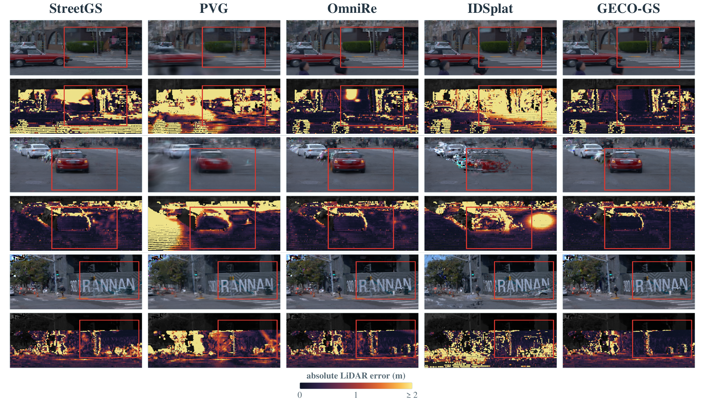
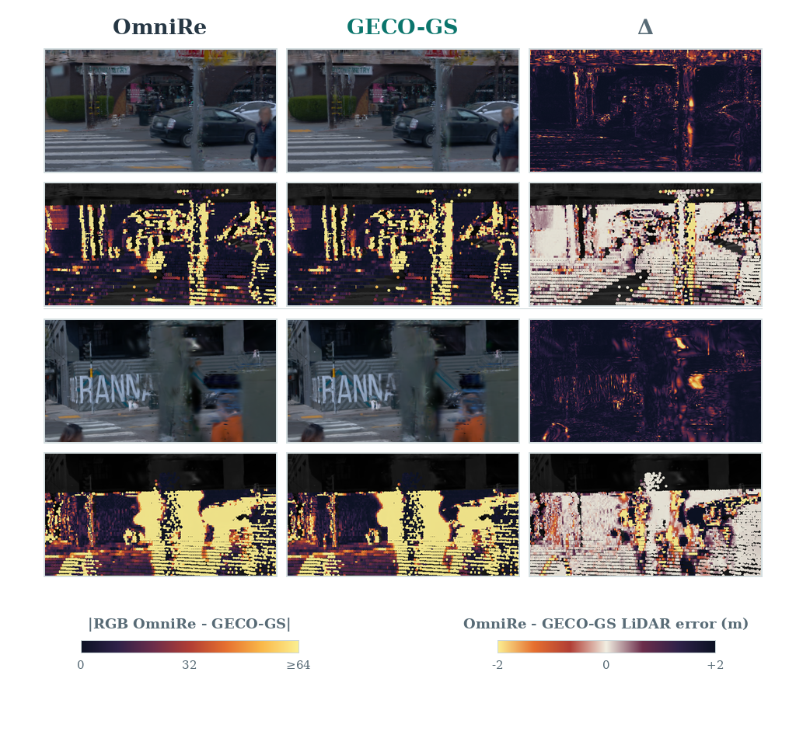
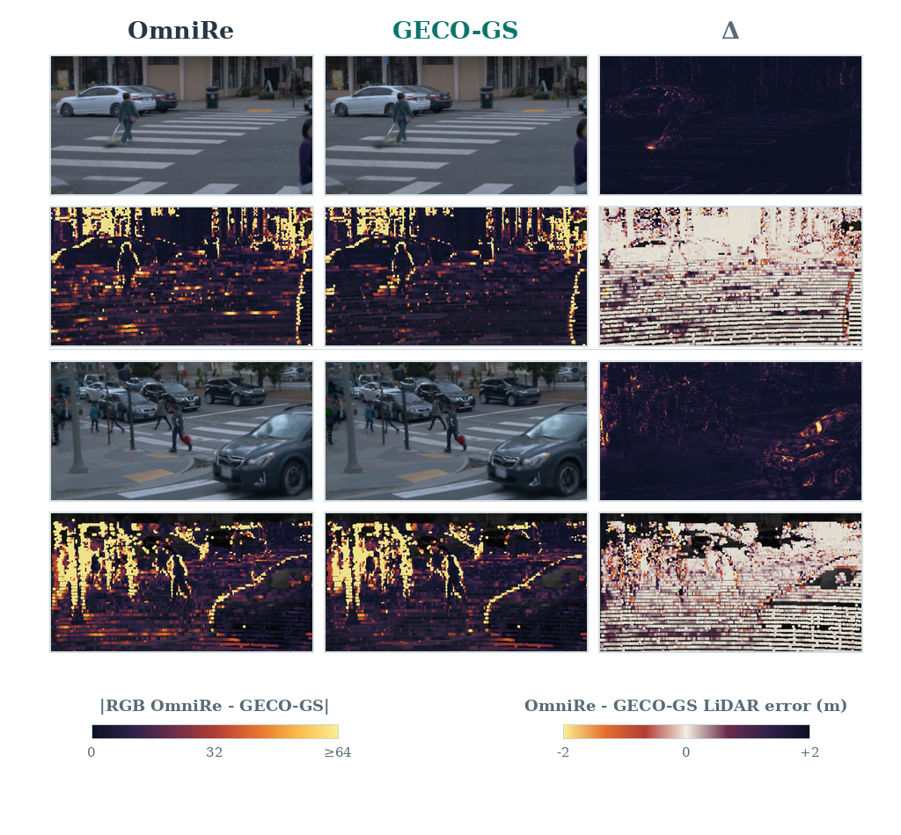
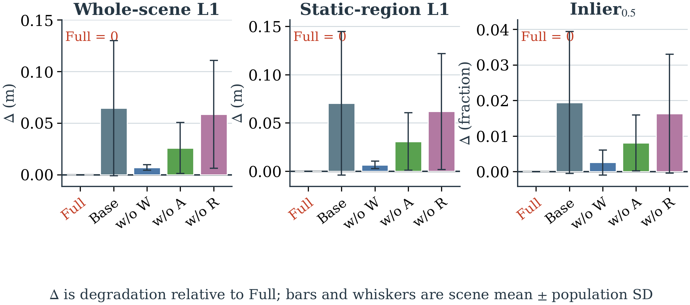
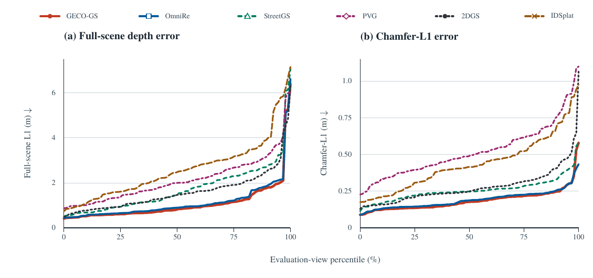

部分实验结果展示
GECO-GS 针对动态驾驶场景在新视点下出现的道路凹陷、建筑错位和车辆形状不稳定等问题，在训练阶段加入世界坐标表面、车辆自身坐标表面和激光雷达射线距离监督；推理阶段仍使用原始相机渲染器。
页面中的几何结果使用回投影激光雷达深度评估。外观指标仅对应训练视角，不代表未见视角的彩色图像测试指标。
一、定量结果
五个驾驶场景的均值；误差单位为米
表 1 右向横移下的全场景深度误差
| 方法（发表信息） | 0 m | 1 m | 2 m | 3 m |
|---|---|---|---|---|
| 2DGS（SIGGRAPH 2024） | 1.466 ± 0.189 | 1.438 ± 0.136 | 1.594 ± 0.170 | 2.045 ± 0.709 |
| StreetGS（ECCV 2024） | 1.464 ± 0.486 | 1.442 ± 0.340 | 1.783 ± 0.243 | 2.376 ± 0.606 |
| IDSplat（CVPR 2026） | 2.149 ± 0.569 | 2.005 ± 0.540 | 2.189 ± 0.530 | 2.721 ± 0.928 |
| PVG（IJCV 2026） | 1.529 ± 0.258 | 1.763 ± 0.269 | 2.123 ± 0.313 | 2.745 ± 0.608 |
| OmniRe（ICLR 2025） | 0.835 ± 0.149 | 0.877 ± 0.117 | 1.151 ± 0.074 | 1.706 ± 0.755 |
| GECO-GS（本文） | 0.796 ± 0.139 | 0.835 ± 0.112 | 1.089 ± 0.101 | 1.637 ± 0.764 |
注：0 m 仅作为记录视角的基准；主页重点关注 1–3 m 的横向视点外推。数值为均值 ± 总体标准差。
表 2 几何指标对比
| 方法（发表信息） | +3 m 横向右移 | +60° 正向偏航 | ||||||
|---|---|---|---|---|---|---|---|---|
| 静态区域 L1↓ | 车辆区域 L1↓ | Inlier₀.₅↑ | Chamfer-L1↓ | 静态区域 L1↓ | 车辆区域 L1↓ | Inlier₀.₅↑ | Chamfer-L1↓ | |
| 2DGS（SIGGRAPH 2024） | 1.735 | 3.854 | 0.601 | 0.313 | 1.234 | 3.202 | 0.616 | 0.289 |
| StreetGS（ECCV 2024） | 2.112 | 4.280 | 0.520 | 0.311 | 1.350 | 2.809 | 0.617 | 0.240 |
| IDSplat（CVPR 2026） | 2.567 | 4.314 | 0.547 | 0.400 | 2.114 | 3.452 | 0.572 | 0.384 |
| PVG（IJCV 2026） | 2.532 | 4.504 | 0.303 | 0.598 | 2.094 | 4.514 | 0.328 | 0.579 |
| OmniRe（ICLR 2025） | 1.591 | 2.795 | 0.663 | 0.236 | 0.769 | 1.834 | 0.755 | 0.178 |
| GECO-GS（本文） | 1.508 | 2.723 | 0.689 | 0.229 | 0.723 | 1.797 | 0.773 | 0.176 |
注：L1 为有效像素上的平均绝对深度误差；Inlier₀.₅ 为误差小于 0.5 m 的有效像素比例；箭头表示指标优劣方向。
表 3 基线方法的出处
| 方法 | 论文名称 | 发表会议或期刊（年份） | 本文中的使用方式 |
|---|---|---|---|
| 2DGS | 2D Gaussian Splatting for Geometrically Accurate Radiance Fields | ACM SIGGRAPH, 2024 | 接入动态场景图的评测变体 |
| StreetGS | Street Gaussians: Modeling Dynamic Urban Scenes with Gaussian Splatting | ECCV, 2024 | 使用 Drivestudio 实现 |
| IDSplat | Instance-Decomposed 3D Gaussian Splatting for Driving Scenes | CVPR, 2026 | 使用官方 Nerfstudio 实现及评测桥接 |
| PVG | Periodic Vibration Gaussian | International Journal of Computer Vision, 2026 | 使用 Drivestudio 实现 |
| OmniRe | OmniRe: Omni Urban Scene Reconstruction | ICLR, 2025 | 基础动态场景图与对比方法 |
发表 venue 与年份按当前公开论文记录填写；IDSplat 的项目参考文献仍保留早期 arXiv 版本。
表 4 训练视角外观指标
| 方法（发表信息） | PSNR（四个场景） | SSIM（四个场景） | LPIPS（四个场景） |
|---|---|---|---|
| OmniRe（ICLR 2025） | 32.96 / 36.29 / 31.03 / 34.80 | 0.94001 / 0.96728 / 0.94749 / 0.95984 | 0.0762 / 0.0419 / 0.0522 / 0.0510 |
| GECO-GS（本文） | 32.80 / 36.13 / 31.05 / 34.75 | 0.94028 / 0.96673 / 0.94611 / 0.95978 | 0.0752 / 0.0411 / 0.0548 / 0.0508 |
注：这些指标均为记录视角的训练视角结果；GECO-GS 的 PSNR 范围为 31.05–36.13 dB。
二、定性结果
论文图 4–8
图 4

图 5

图 6

图 7

图 8

三、实验设置与说明
- 数据集
- Waymo Open Dataset，五个驾驶场景。
- 横向外推
- 相机向车辆右侧平移 1–3 m；表格中的 0 m 是记录视角基准。
- 偏航外推
- 相机中心不变，绕车辆竖直轴正向旋转 +30° 和 +60°。
- 几何参考
- 将激光雷达点回投影到查询相机，计算全场景、静态区域和车辆区域的深度误差。
- 外观指标
- PSNR、SSIM 和 LPIPS 只在训练视角报告；外推视角没有对应的彩色图像真值。
本页面使用 Waymo Open Dataset 的派生可视化结果。正式公开前请自行核对数据集许可与署名要求。